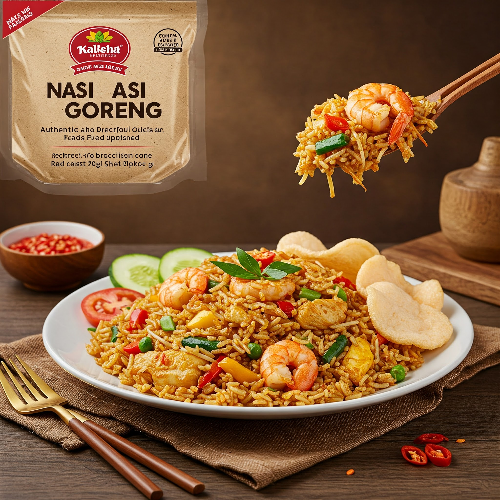

Nasi Goreng Recipe

Nasi Goreng (Indonesian Fried Rice, eng): A Special Dish from Leftover Rice
Nasi goreng, a dish of rice that is fried and mixed with various spices and additional ingredients, is one of the most popular and favorite Indonesian dishes. In addition to its delicious taste, Nasi goreng is also a smart way to use leftover rice.
Ingredients:
- White rice (preferably cold rice)
- Shallots, thinly sliced
- Garlic, finely chopped
- Red chilies, sliced diagonally (to taste)
- Eggs, beaten
- Chicken/shrimp/meatballs, cut into pieces (optional)
- Vegetables (carrots, beans, mustard greens, etc.), cut into pieces (optional)
- Sweet soy sauce
- Oyster sauce
- Salt to taste
- Pepper powder to taste
- Cooking oil to taste
Instructions:
- Heat cooking oil in a wok. Saute shallots, garlic, and red chilies until fragrant.
- Add the eggs, scramble until cooked.
- Add chicken/shrimp/meatballs (if using), cook until it changes color.
- Add vegetables (if using), cook until slightly wilted.
- dd white rice, stir well.
- Add sweet soy sauce, oyster sauce, salt, and pepper powder. Stir well and cook until all ingredients are perfectly mixed.
- Correct the taste. Add spices if needed.
- Remove the fried rice, serve warm with a sprinkling of fried onions and crackers (optional).
Enjoy a Warm and Appetizing Nasi goreng
Nasi goreng is a flexible dish that can be customized to your taste. You can add various additional ingredients such as seafood, vegetables, or other spices to create a unique and delicious Nasi goreng. Good luck and good luck in making delicious Nasi goreng at home!
Home